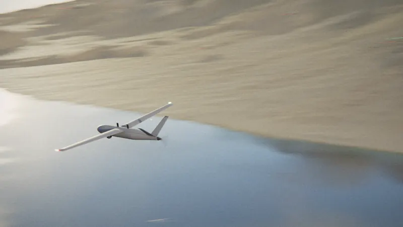
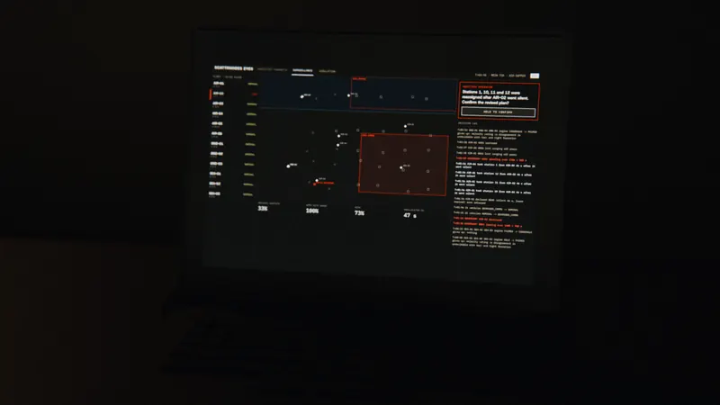

System
One autonomy layer. Three domains.

Flown in simulation
UAV · fixed-wing
Formation around a ghost leader, navigation without GPS, relay when the radio fails.

In development
UGV
Ground teams on the same plan, watched and guided from above.

In development
USV
Lake and coastal water covered by the same mission.

Scattrnodes Eyes
The operator stays in command.
One screen for the whole fleet. The system proposes, a person approves every decision that matters.
Formation logic
A ring around a leader that isn’t there.
Each UAV holds a slot around a moving point. Lose any one and the others close the ring.
Proof
Measured, not claimed.
| Missions flown in simulation | 768 | 555 passed, 141 failed, 72 skipped · 114 campaigns |
|---|---|---|
| UAVs in tight formation | 8 | Largest formation flown in simulation so far |
| Flights on a real UAV | 0 | First flight test is next |
Every number is recounted from our code before this page can go live. Results are from simulation.
Live
Run the mission yourself.
Our real software, running in your browser. Jam the GPS, cut the radio, and watch the fleet adapt.
Open the simulationContact
Talk to us.
We are raising a pre-seed round to take Homing Vector into flight test.
nidhip.sharma.123 [at] gmail.comLinkedIn
Nidhip Sharma, Founder